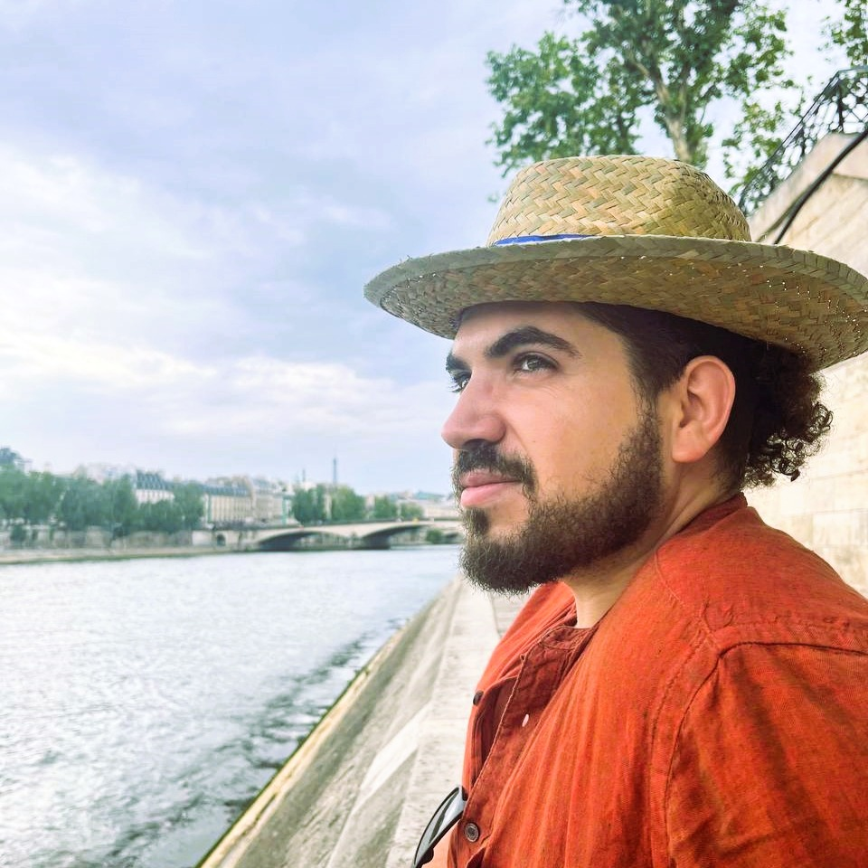

<div class="sidenav" aria-label="Main navigation">
    
    <p></p>
    <h1 class="website-title">Douglas Finamore</h1>

    <div class="sidebar-links" role="navigation" aria-label="Primary links">
        <a href="index.html" title="Homepage"><i class="fas fa-home"></i></a> <!-- Homepage link -->
        <a href="publications.html" title="Research Publications"><i class="fas fa-book"></i></a> <!-- Research Publications link -->
        <a href="profAct.html" title="Professional Activities"><i class="fas fa-chalkboard-teacher"></i></a> <!-- Professional Activities link -->
        <a href="assets/files/cv.pdf" target="_blank" rel="noopener noreferrer" title="Curriculum Vitae"><i class="fas fa-file-alt"></i></a> <!-- CV link -->
    </div>

    <div class="sidebar-links second-row" role="navigation" aria-label="Academic profiles">
        <a href="https://scholar.google.com/citations?user=X2rHVEcAAAAJ" target="_blank" rel="noopener noreferrer" title="Google Scholar">
            <i class="fas fa-graduation-cap"></i>
        </a> <!-- Google Scholar -->
        <a href="https://orcid.org/0000-0003-1356-1790" target="_blank" rel="noopener noreferrer" title="ORCID">
            <i class="fab fa-orcid"></i>
        </a> <!-- ORCID -->
        <a href="https://www.researchgate.net/profile/Douglas-Finamore" target="_blank" rel="noopener noreferrer" title="ResearchGate">
            <i class="fab fa-researchgate"></i>
        </a> <!-- ResearchGate -->
        <a href="http://lattes.cnpq.br/9996830557701980" target="_blank" rel="noopener noreferrer" title="Lattes CV">
            <i class="fas fa-address-card"></i>
        </a> <!-- Lattes CV -->
    </div>

    <div class="footer-content">
        <p> <a href="about.html" target="_blank" title="About this website">About this website</a></p>
        <p>&copy; 2025 &delta;&phi;. All rights reserved.</p>
    </div>
</div>
